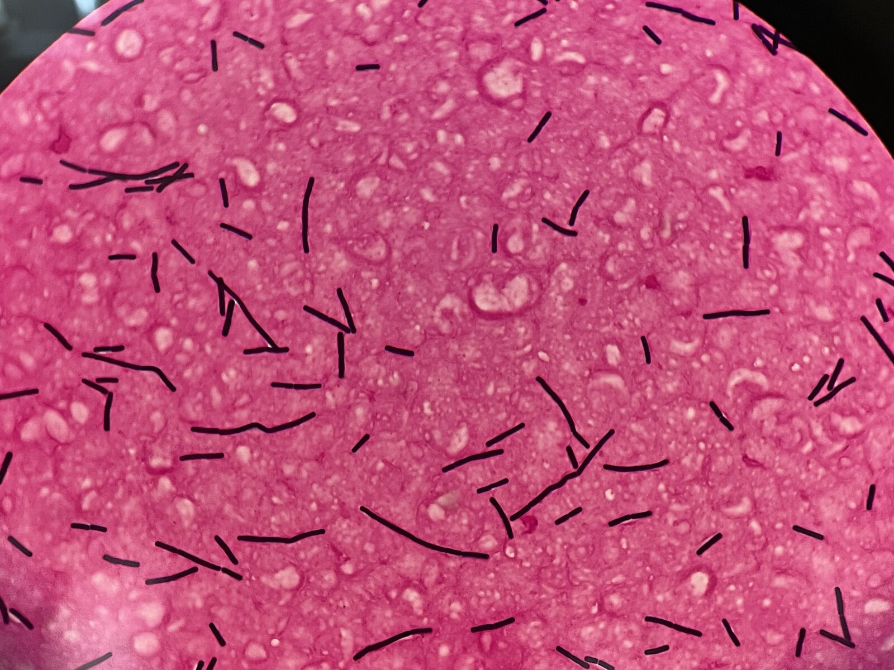

グラム染色 像 撮影：ICU関谷

主な感染症
ひとことメモ
- 血培コンタミと真の感染の鑑別 — 多検体陽性／免疫不全／カテ留置で真感染を疑う
抗菌薬選択
※ 灰色表示の抗菌薬は日本未発売のため、原則として保険診療では使用不可。
第一選択（重症感染症）
- バンコマイシン
全株感受性が報告されており、重症 B. cereus 感染症（菌血症・髄膜炎・眼内炎等）の第一選択[1][2][10][11]。 - シプロフロキサシン
経験的治療として使用可能[1][2]。
感受性が報告されている抗菌薬
- ゲンタマイシン（全株感受性）[1][2]
- イミペネム（カルバペネム系）[1][2]
- クロラムフェニコール[1][2]
- エリスロマイシン[1][2]
- クリンダマイシン
血流感染分離株では 65.5% 耐性の報告あり、感受性確認が必要[11]。
耐性
食中毒
出典
- Bottone EJ. Bacillus Cereus, a Volatile Human Pathogen. Clin Microbiol Rev 2010;23(2):382-98.
- Drobniewski FA. Bacillus Cereus and Related Species. Clin Microbiol Rev 1993;6(4):324-38.
- Xu X, Kovács ÁT. How to identify and quantify the members of the Bacillus genus? Environ Microbiol 2024;26(2):e16593.
- Enosi Tuipulotu D, et al. Bacillus Cereus: Epidemiology, Virulence Factors, and Host-Pathogen Interactions. Trends Microbiol 2021;29(5):458-471.
- Jovanovic J, et al. Bacillus Cereus Food Intoxication and Toxicoinfection. Compr Rev Food Sci Food Saf 2021;20(4):3719-3761.
- Li N, et al. Global Epidemiology and Health Risks of Bacillus Cereus Infections. Food Res Int 2025;201:115650.
- Leong SS, Korel F, King JH. Bacillus Cereus: A Review of "Fried Rice Syndrome" Causative Agents. Microb Pathog 2023;185:106418.
- Lotte R, et al. Bacillus Cereus Invasive Infections in Preterm Neonates. Clin Microbiol Rev 2022;35(2):e0008821.
- Torkar KG, Bedenić B. Antimicrobial Susceptibility and Characterization of Metallo-Β-Lactamases of Bacillus Cereus Isolates. Microb Pathog 2018;118:140-145.
- Weber DJ, et al. In Vitro Susceptibility of Bacillus Spp. To Selected Antimicrobial Agents. Antimicrob Agents Chemother 1988;32(5):642-5.
- Ikeda M, et al. Clinical Characteristics and Antimicrobial Susceptibility of Bacillus Cereus Blood Stream Infections. Ann Clin Microbiol Antimicrob 2015;14:43.